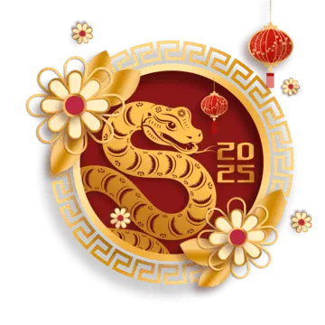
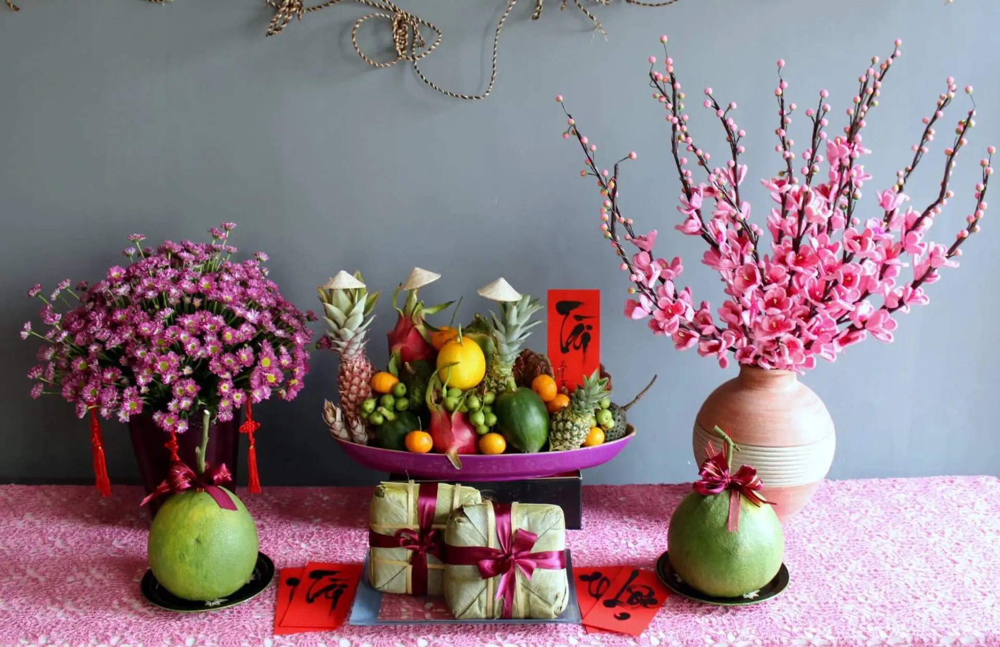
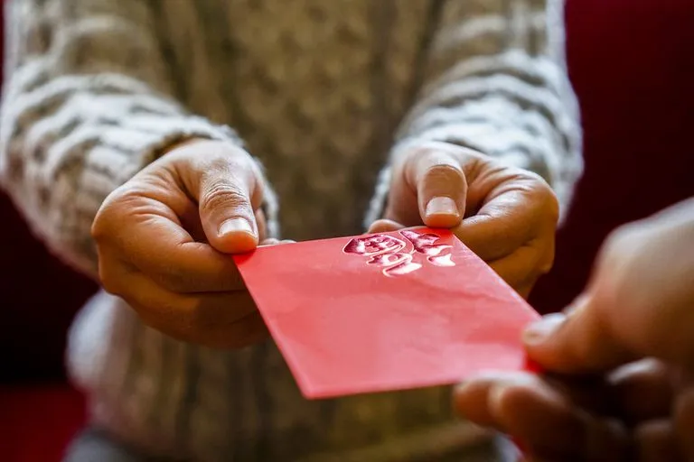
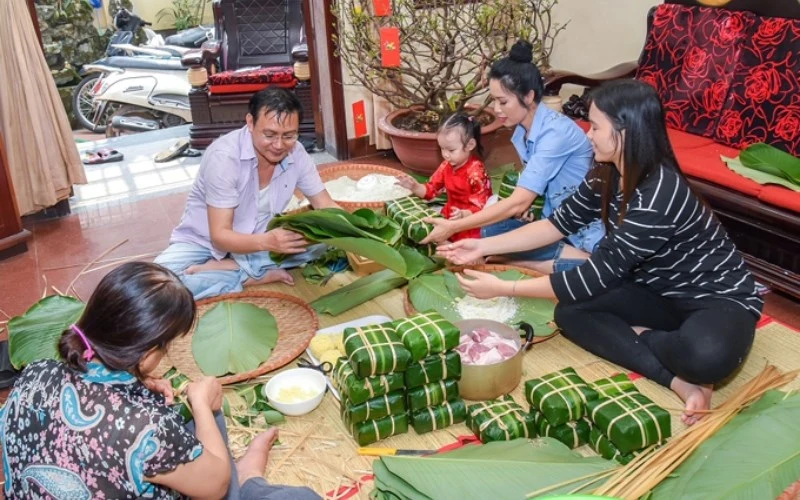
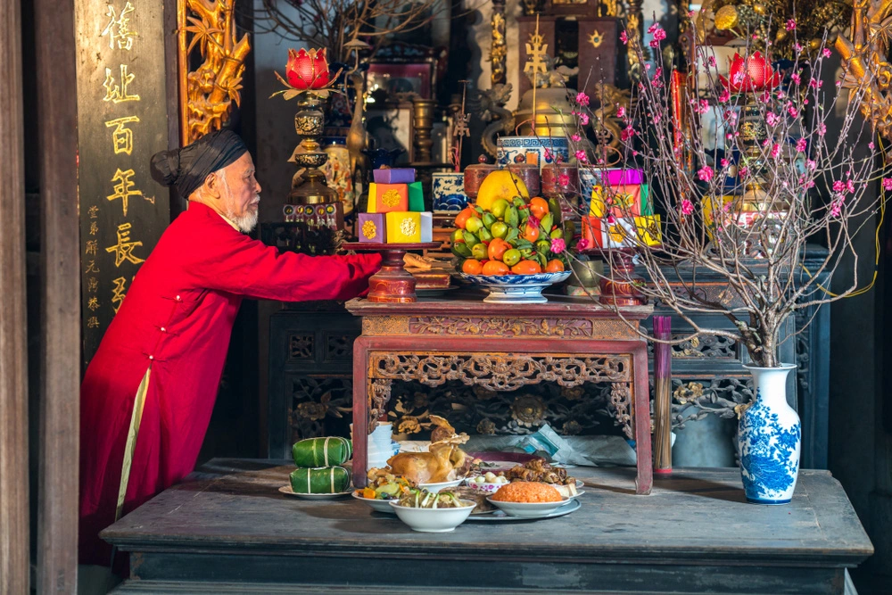
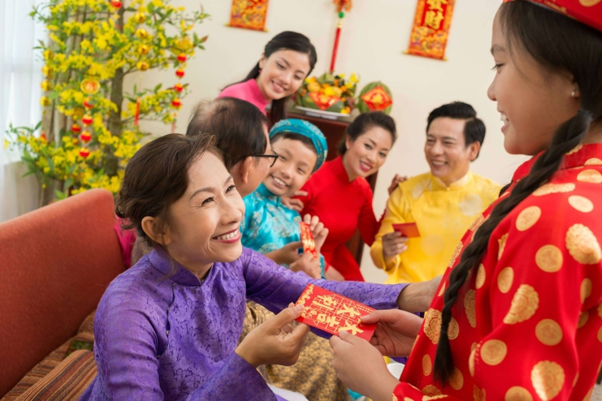
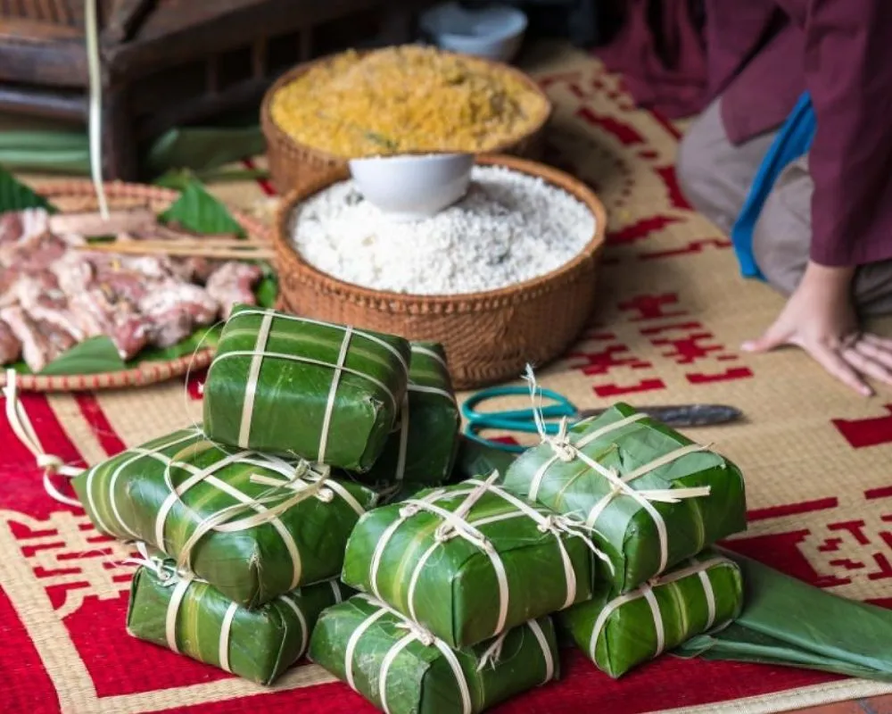

Tết Nguyên Đán
Authors:
🍎 Trần Hoàng Bách 12XH1
🧍♂️ Đinh Thiện Nhân 12XH1
Nguồn gốc của Tết
Dù có phần xuất phát từ văn hoá của Trung Quốc do thời kỳ Bắc thuộc, phần lớn văn hoá và giá trị cốt lõi của Tết đã luôn thuộc về Việt Nam.
Xưa, Tết Nguyên Đán là một dịp để người dân có thể cầu cho tín ngưỡng của mình. Ngoài ra, đây còn là ngày "làm mới", là lúc người dân gác lại những điều không may mắn trong năm cũ và tập trung hy vọng vào một năm mới an lành hơn.
Tết là ngày đầu tiên trong lịch âm - một loại lịch thường được dùng ở các nước phương Đông (như Việt Nam, Trung Quốc), rơi vào khoảng cuối tháng 1 đến đầu / giữa tháng 2.

Những phong tục đẹp của người Việt trong Tết

Gia đình người Việt thường trang trí mâm ngũ quả trên bàn thờ - 5 loại quả theo quan niệm của người xưa là ngũ hành tượng trưng cho sự phát triển, sinh sôi với mong muốn cho một năm mới có nhiều tài lộc và thành quả tốt.

Người Việt có phong tục đi chúc Tết họ hàng, bạn bè trong những ngày Tết. Thông điệp là chủ yếu, còn vật chất đi kèm chỉ là thêm.

Tết của người Việt đương nhiên không thể thiếu những gói bánh chưng, bánh tét. Bánh chưng ngày Tết không chỉ như một món ăn tinh thần của người Việt, mà còn là sự trân trọng, giữ gìn và phát huy những truyền thống tốt đẹp của ông cha ta.

Lễ cúng Ông Công, Ông Táo là một nghi lễ truyền thống quan trọng trong văn hóa Việt Nam, thường tổ chức vào những ngày cuối năm âm lịch, chủ yếu là vào mùng 23 hoặc mùng 24 tháng Chạp. Vào ngày này, người dân Việt nam sẽ chuẩn bị sửa soạn mâm cơm cúng, tiễn ông Công, ông Táo về trời báo cáo với ngọc hoàng.
Hòa mình trong không khí Tết
Là người Việt Nam biết bao lâu nay, những ngày đầu năm luôn khiên tôi phấn khởi cho kỳ nghỉ Tết. Không phải được nghỉ ở nhà thật sướng?! Không hẳn!
Trước mắt, luôn phải ưu tiên việc nhà, việc thờ cúng ông bà, tổ tiên, vân vân và vân vân. Thật sự khá mệt mỏi khi phải làm những việc này. Nhưng một khi đã hoàn thành công việc cơm nước nhà cửa, thời gian bên gia đình vẫn luôn là thứ mà tôi trân trọng nhất. Tất nhiên là lì xì quan trọng thứ hai :)

Cảm nhận riêng
Về phong tục lì xì
Một phong tục được mọi lứa tuổi, đặc biệt là trẻ em chú ý đến. Tượng trưng cho sự chúc phúc, lấy lộc đầu năm, trẻ em nên được giáo dục kỹ hơn về các truyền thống này.
Về gói bánh chưng
Không chỉ đơn thuần là một hoạt động làm bánh, đây còn là một cơ hội rất tốt để các thành viên trong gia đình sum vầy, trò truyện và gắn bó với nhau hơn. Không chỉ vậy, bánh chưng còn là một truyền thống đã được truyền lại qua nhiều thế hệ, giúp ta hiểu rõ nguồn gốc tổ tiên hơn.
Về mâm ngũ quả
Một trong những phong tục mang tính độc đáo hơn của người Việt Nam. Bằng cách liên kết những ý nghĩa khác nhau cho mỗi loại quả, đã khiến việc thờ cúng tổ tiên trở nên linh thiên, quan trọng hơn trước.
